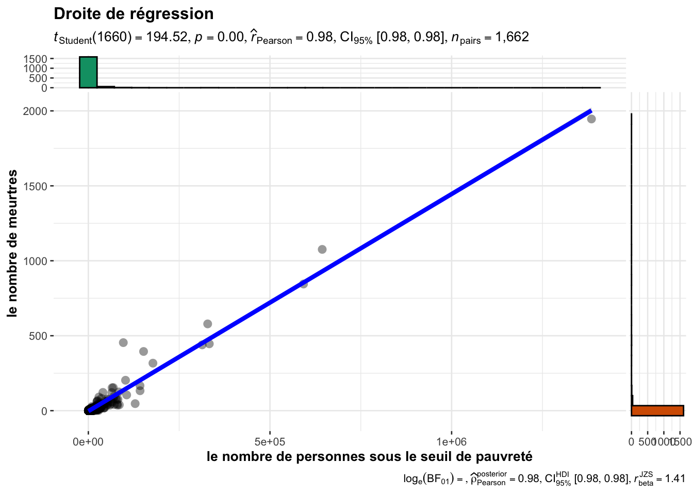

Chapter 1 Régression linéaire
1.1 Introduction
La régression lineaire est une méthode statistique qui permet de trouver une relation lineaire entre des variables quantitives, une à expliquer et d’autres explicatives. C’est en fait un ajustement affine de la forme :
\[\begin{equation} y_i = \beta_0 + \beta_1x_{i1} + \beta_2x_{i2} +\dots+\beta_px_{ip}+\epsilon_{i}\;\; \end{equation}\]\[i\in\{1,2,3\dots,n\}\]
- \(y_i\) représentent la \(i\)ème valeur de la variable dépendantes \(y\).
- \(x_{ij}\) représente la mesure de la \(i\)ème observation de la variable explicative \(X_j\)
- les \(\beta_j\) sont les paramètres inconnus du modèle à estimer
- \(\epsilon_i\) représente le bruit associé à la \(i\)ème observation
L’équation précédente peut être écrite sous une forme matricielle de cette manière :
avec :
Commençons par importer le jeu de données que nous nommerons \(dfcom\):
Communities = read.csv("data/Communities.csv",row.names = 1)| communityname | State | countyCode | communityCode | fold | pop | perHoush | pctBlack | pctWhite | pctAsian | pctHisp | pct12.21 | pct12.29 | pct16.24 | pct65up |
|---|---|---|---|---|---|---|---|---|---|---|---|---|---|---|
| BerkeleyHeightstownship | NJ | 39 | 5320 | 1 | 11980 | 3.10 | 1.37 | 91.78 | 6.50 | 1.88 | 12.47 | 21.44 | 10.93 | 11.33 |
| Marpletownship | PA | 45 | 47616 | 1 | 23123 | 2.82 | 0.80 | 95.57 | 3.44 | 0.85 | 11.01 | 21.30 | 10.48 | 17.18 |
| Tigardcity | OR | ? | ? | 1 | 29344 | 2.43 | 0.74 | 94.33 | 3.43 | 2.35 | 11.36 | 25.88 | 11.01 | 10.28 |
| Gloversvillecity | NY | 35 | 29443 | 1 | 16656 | 2.40 | 1.70 | 97.35 | 0.50 | 0.70 | 12.55 | 25.20 | 12.19 | 17.57 |
| Bemidjicity | MN | 7 | 5068 | 1 | 11245 | 2.76 | 0.53 | 89.16 | 1.17 | 0.52 | 24.46 | 40.53 | 28.69 | 12.65 |
| Springfieldcity | MO | ? | ? | 1 | 140494 | 2.45 | 2.51 | 95.65 | 0.90 | 0.95 | 18.09 | 32.89 | 20.04 | 13.26 |
| Norwoodtown | MA | 21 | 50250 | 1 | 28700 | 2.60 | 1.60 | 96.57 | 1.47 | 1.10 | 11.17 | 27.41 | 12.76 | 14.42 |
| Andersoncity | IN | ? | ? | 1 | 59459 | 2.45 | 14.20 | 84.87 | 0.40 | 0.63 | 15.31 | 27.93 | 14.78 | 14.60 |
| Fargocity | ND | 17 | 25700 | 1 | 74111 | 2.46 | 0.35 | 97.11 | 1.25 | 0.73 | 16.64 | 35.16 | 20.33 | 8.58 |
| Wacocity | TX | ? | ? | 1 | 103590 | 2.62 | 23.14 | 67.60 | 0.92 | 16.35 | 19.88 | 34.55 | 21.62 | 13.12 |
1.2 Application de la régression linéaire simple
Comme nous l’avons mentionner dans l’introduction, le but de se projet est d’expliquer de différentes manières les meurtes aux USA. Par conséquent, on peut choisir comme variable dépendante, les crimes(murders) et chercher les variables explicatives. Dans le cas de le régression linéaire simple il doit exister une corrélation assez importante entre la variable \(y\)(muders) et \(X\) que nous recherchons actuellement. DOnc commençons par filtrer les fortes corrélation avec la variable \(y\) dans notre jeu de données.
# Correlation matrix
corCom = correlation::correlation(Communities)
# Filtered correlation, bound =0.8
corCom[(corCom$r>0.8) & corCom$Parameter2=='murders',]## # Correlation Matrix (pearson-method)
##
## Parameter1 | Parameter2 | r | 95% CI | t(2213) | p
## -------------------------------------------------------------------------
## pop | murders | 0.96 | [0.96, 0.96] | 159.80 | < .001***
## persUrban | murders | 0.96 | [0.95, 0.96] | 156.13 | < .001***
## persPoverty | murders | 0.98 | [0.97, 0.98] | 211.42 | < .001***
## kidsBornNevrMarr | murders | 0.98 | [0.98, 0.98] | 221.27 | < .001***
## numForeignBorn | murders | 0.89 | [0.88, 0.90] | 92.94 | < .001***
## houseVacant | murders | 0.90 | [0.89, 0.90] | 95.29 | < .001***
## persEmergShelt | murders | 0.89 | [0.88, 0.90] | 93.14 | < .001***
## persHomeless | murders | 0.85 | [0.84, 0.86] | 76.49 | < .001***
##
## p-value adjustment method: Holm (1979)
## Observations: 2215Le tableau précédent indique les variables fortement corrélées avec notre \(output\) murders. Prenons l’exemple de la variable persPoverty qui représente le nombre de personnes sous le seuil de pauvreté.
library(ggplot2)
fig = ggplot(data = Communities,aes(x=persPoverty,y=murders))+
geom_point()
fig
La figure précédente laisse parraître qu’il pourrait effectivement exister une relation linéaire entre murders et persPoverty. Appliquons la fonction lm() pour voir ce qu’il en est vraiment ! Pour faire une analyse des résidus pltard, nous n’entrainerons que \(75\%\) du jeu de données et le reste servira à la prédiction.
library(dplyr)##
## Attaching package: 'dplyr'## The following objects are masked from 'package:stats':
##
## filter, lag## The following objects are masked from 'package:base':
##
## intersect, setdiff, setequal, union# Train_Test_Splite
set.seed(1345)
# Pourcentage de donnees correspondant a 25%
per = dim(Communities)[1]%/%4
echantillon <- sample(1:dim(Communities)[1]) %>% .[1:per]
lmDataTrain = Communities[-echantillon,c("murders","persPoverty")]
lmDataTest = Communities[echantillon,c("murders","persPoverty")]#Model Training
lmSimple <- lm(murders~persPoverty,data = lmDataTrain)
summary(lmSimple)##
## Call:
## lm(formula = murders ~ persPoverty, data = lmDataTrain)
##
## Residuals:
## Min 1Q Median 3Q Max
## -136.43 -1.13 1.32 2.52 317.80
##
## Coefficients:
## Estimate Std. Error t value Pr(>|t|)
## (Intercept) -3.271e+00 3.340e-01 -9.796 <2e-16 ***
## persPoverty 1.449e-03 7.447e-06 194.519 <2e-16 ***
## ---
## Signif. codes: 0 '***' 0.001 '**' 0.01 '*' 0.05 '.' 0.1 ' ' 1
##
## Residual standard error: 13.4 on 1660 degrees of freedom
## Multiple R-squared: 0.958, Adjusted R-squared: 0.9579
## F-statistic: 3.784e+04 on 1 and 1660 DF, p-value: < 2.2e-16La sortie de la fonction summary() indique des \(p-values\) très inférieures à \(5\%\), donc on rejette l’hypothèse de nullité des \(\beta\). On peut aussi constater que le coefficient de détermination \(R^2\) vaut \(0.958\) ce qui signifie que notre modèle a un score de \(95.8\%\). Ce dernier reflète une bonne qualité du modèle.
ggstatsplot::ggscatterstats(
data = lmDataTrain,
x = persPoverty,
y = murders,
xlab = "le nombre de personnes sous le seuil de pauvreté",
ylab = "le nombre de meurtres",
title = "Droite de régression",
messages = FALSE
)## Registered S3 method overwritten by 'ggside':
## method from
## +.gg ggplot2## `stat_bin()` using `bins = 30`. Pick better value with `binwidth`.
## `stat_bin()` using `bins = 30`. Pick better value with `binwidth`.
A présent, nous pouvons utiliser notre échantillon non entrainé de données pour prédire à partir de notre model, quel aurait était le nombre de meurtres pour chauque \(x_i\).
X_test=as.data.frame(lmDataTest[["persPoverty"]])
colnames(X_test)="persPoverty"
y_predict = predict(object = lmSimple,X_test)On peut représenter le graphe des \(\hat y\) prédits et des \(y\). Pour un modèle parfait, le nuage de point doit être sur la première bissectrice.
ggplot(data =lmDataTest) +
geom_point(aes(persPoverty,murders),color = 'darkgreen',
size =2,shape=22,fill ="darkgreen") +
geom_point(aes(x = persPoverty, y =y_predict), color ='blue') +
geom_segment(aes(x =persPoverty ,
y = murders, xend = persPoverty, yend = y_predict),
color = 'red')Figure 1.1: Les segments en rouges représentent les résidus, les carrés verts les y non entrainés qui ont servi au test et les points bleus représentent les y prédits à partir de notre modèle.
On peut aussi visualiser la répartition des résidus du modèle lmSimple autour de leur moyenne \(0\).
plot(lmSimple$residuals)Figure 1.2: On constate une répartition des résidus autour de 0